실습 2. 국토의 변화상을 빠르게 수집
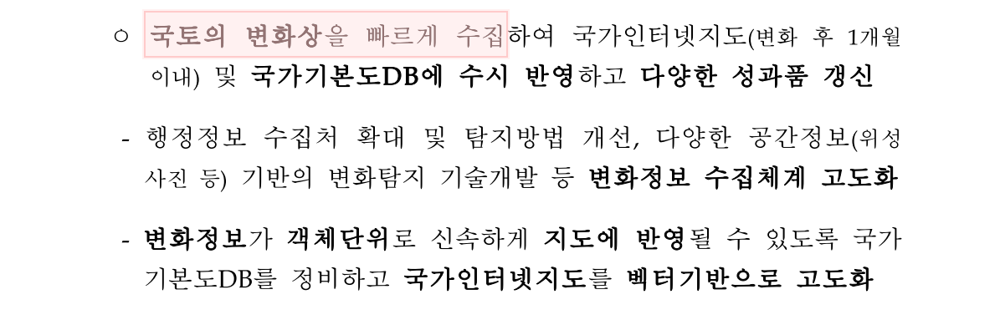
해결책
드론을 1달에 2번씩 띄워 같은 지역의 사진을 찍은 후 변화 검출
| 촬영 1 | 촬영 2 |
|---|---|
| 2026. 1. 1. 촬영본 | 2026. 1. 16. 촬영본 |
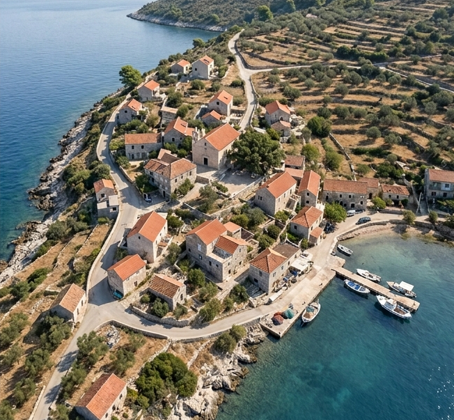 | 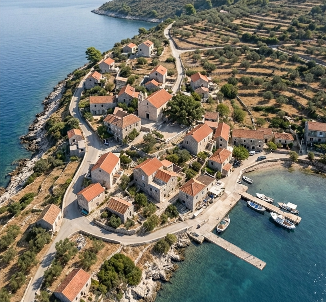 |
실행 방법 1 - AI가 아닌 방법
1. odiff를 다운로드 받는다.
-
Release 아래의 version 부분을 클릭한다.
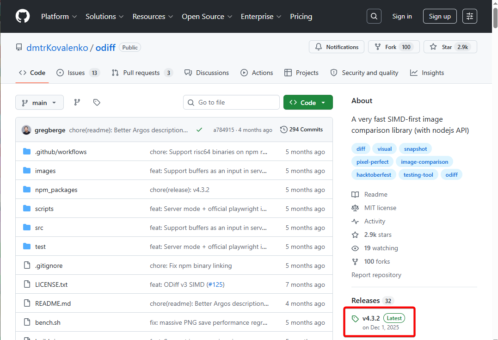
-
odiff-windows-x64.exe 파일을 클릭해 다운로드 받는다.
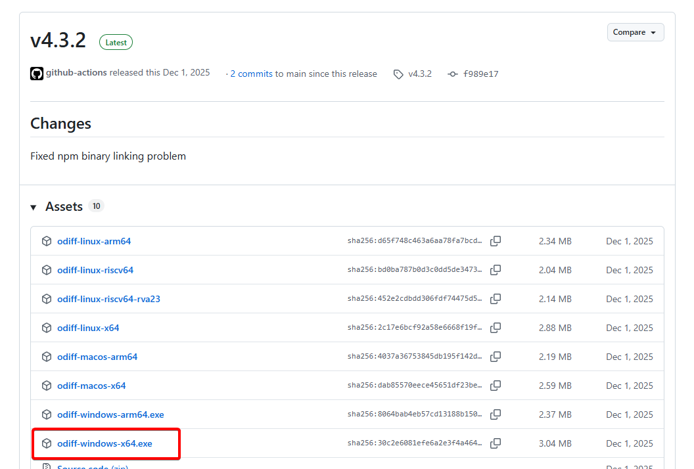
2. 샘플 이미지 준비
- 위 이미지 파일 2개를 다운로드 받는다.
3. 파일 한 곳에 모으고 powershell 실행하기
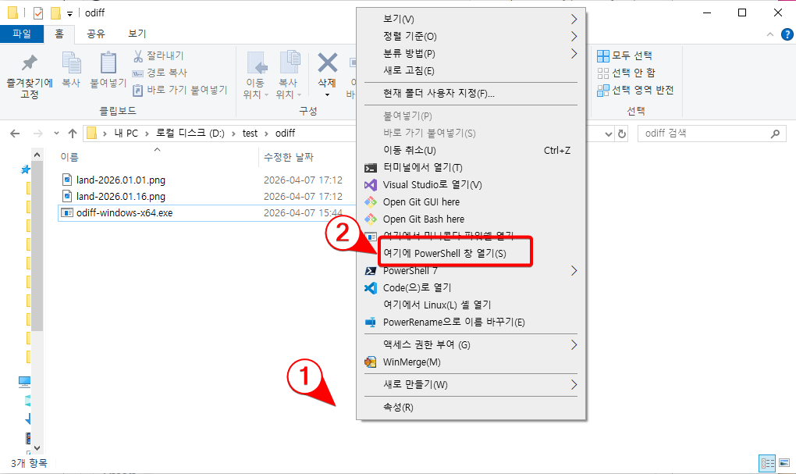
land-2026.01.01.png, land-2026.01.16.png, odiff-windows-x64.exe, 총 3개의 파일을 한 폴더에 모은다. 웹브라우저로 다운로드 받았기 때문에 "다운로드" 폴더에 이미 모여 있을 것이다.(여기서는 d:\test\odiff 폴더 사용)
-
탐색기에서 빈 곳을 Shift 키를 누른 채로 오른쪽 클릭한다.
-
"여기에 PowerShell 창 열기"를 선택한다.
4. odiff 실행
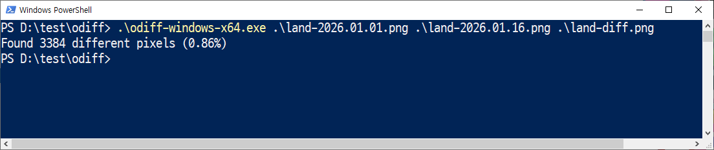
.\odiff-windows-x64.exe .\land-2026.01.01.png .\land-2026.01.16.png .\land-diff.png
5. odiff 실행결과
land-diff.png 파일 내용
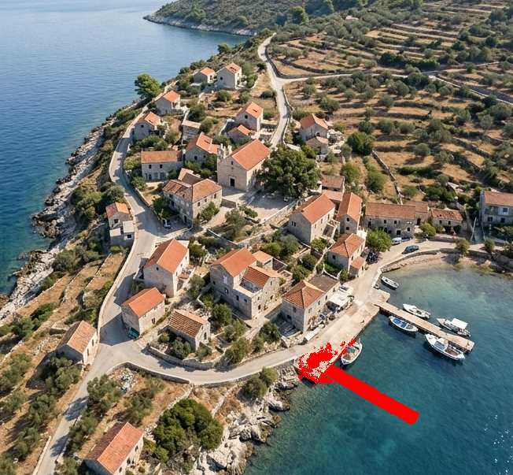
위 방법의 문제점
위 방법은 사진이 아주 완벽하게 똑같은 위치, 똑같은 각도에서 찍은 경우에만 비교 가능하다는 문제가 있다.
드론을 이용해 찍은 사진은 위와 같이 촬영되는 경우가 없다.
드론으로 촬영한 듯한 샘플
| 촬영 1 | 촬영 2 |
|---|---|
| 2026. 1. 1. 촬영본 | 2026. 1. 16. 촬영본 |
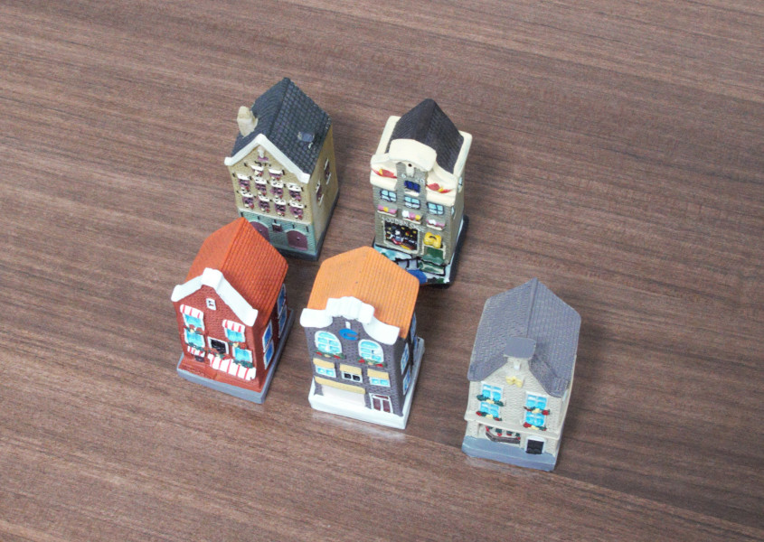 | 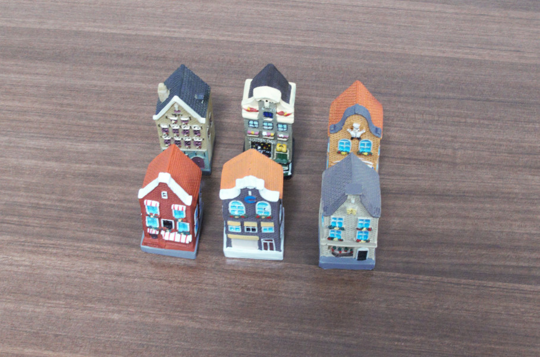 |
위 두 이미지는 같은 지역을 촬영했지만, 드론으로 여러 번 촬영할 때처럼 촬영 위치와 각도가 다르다.
실행방법 2 - AI, 나노 바나나2 이용
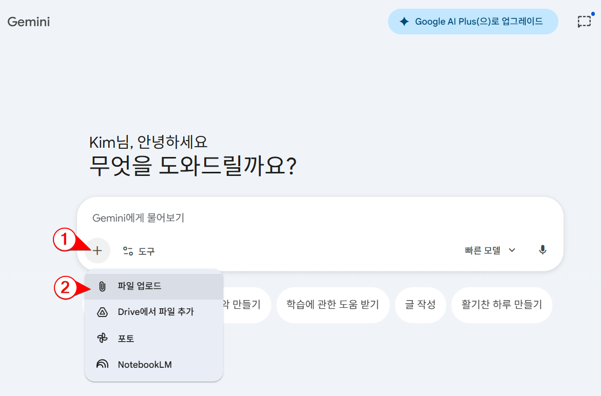
제미나이에서 위와 같이 2개의 이미지 파일을 업로드한다.
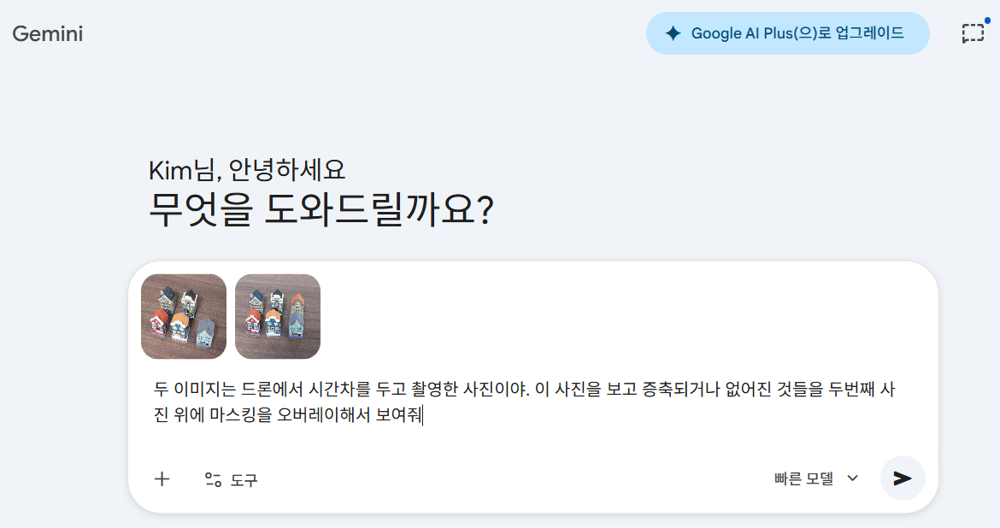
두 이미지는 드론에서 시간차를 두고 촬영한 사진이야. 이 사진을 보고 증축되거나 없어진 것들을 두번째 사진 위에 마스킹을 오버레이해서 보여줘
결과
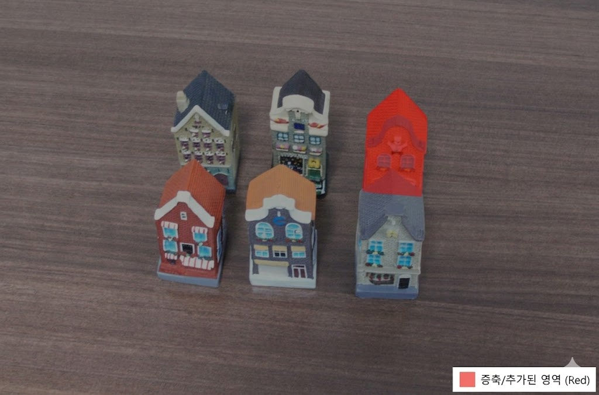
건물 증축 파악
| 촬영 1 | 촬영 2 |
|---|---|
| 2026. 1. 16. 촬영본 | 2026. 2. 2. 촬영본 |
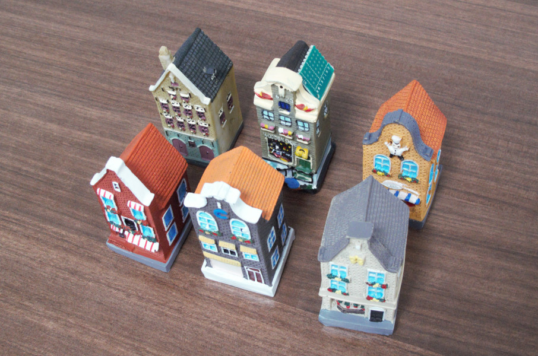 |
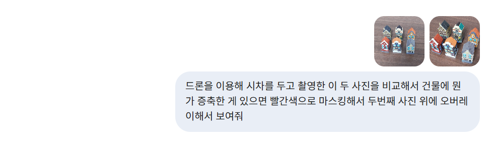
결과
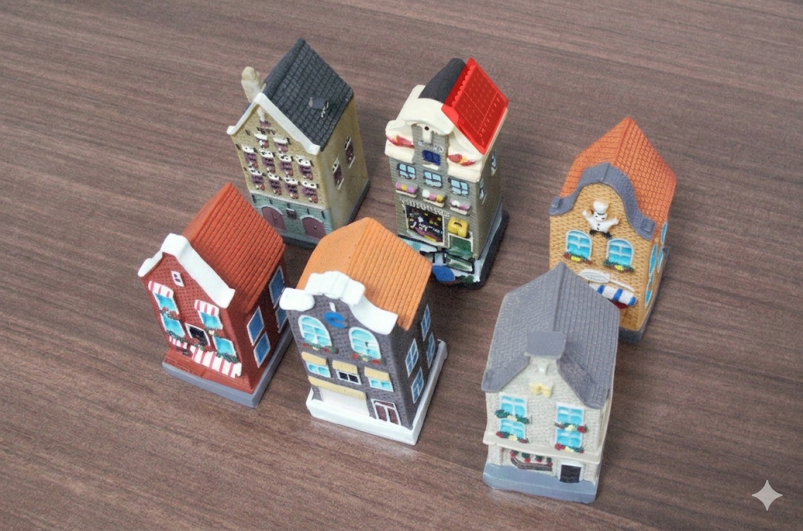